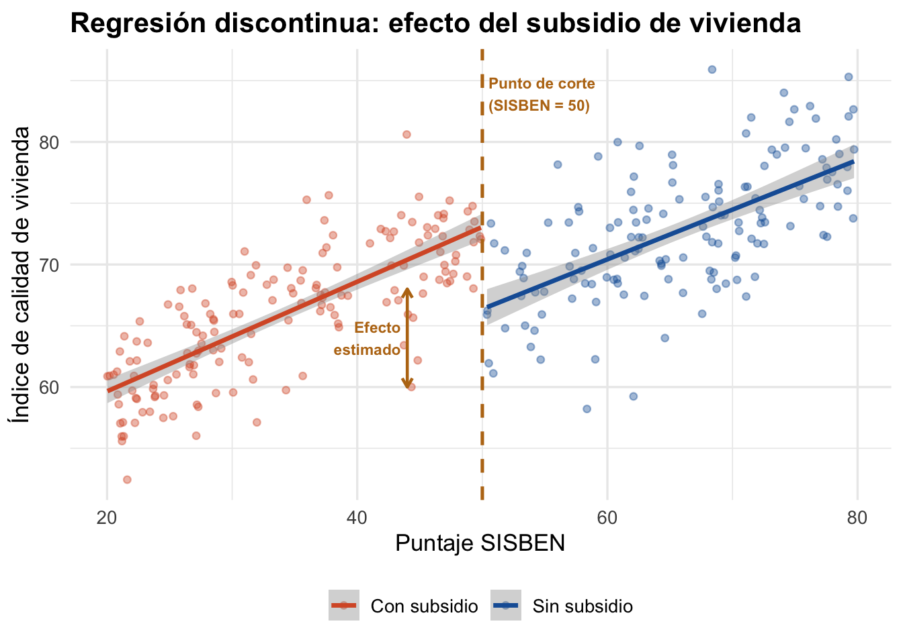

14 Regresión discontinua
14.1 ¿Qué es la regresión discontinua?
Muchos programas sociales determinan la elegibilidad con base en un puntaje: quienes están por debajo de cierto umbral reciben el beneficio, quienes están por encima no. La regresión discontinua (RDD) aprovecha esta regla para estimar el efecto causal del programa. @gertler2016impact explican el método utilizando el ejemplo de un programa de transferencias monetarias en el que la elegibilidad se determina mediante un índice de pobreza: los hogares con puntaje por debajo de un umbral reciben el beneficio, y los demás no. La observación clave es que los hogares que se encuentran justo por encima y justo por debajo del punto de corte son prácticamente idénticos en todas sus características observables y no observables, lo que convierte la vecindad del umbral en un “experimento natural” [@lee2010].
La idea central es que las personas que están justo por debajo y justo por encima del punto de corte son prácticamente idénticas en todo, excepto en que unas recibieron el programa y otras no. Es como tener un mini-experimento natural alrededor del umbral.
NotaLa idea clave
Si el puntaje de elegibilidad es 50, una persona con 49.5 puntos y otra con 50.5 son casi iguales. Pero una recibe el subsidio y la otra no. Comparando sus resultados, podemos estimar el efecto del programa en la vecindad del punto de corte.
Ejemplo colombiano: El puntaje SISBEN clasifica a los hogares por nivel socioeconómico. Los hogares con puntaje por debajo de cierto umbral acceden a subsidios de salud, educación o vivienda. La regresión discontinua compara hogares que quedaron justo por debajo versus justo por encima del corte. @gertler2016impact señalan que este enfoque basado en índices de focalización es común en América Latina, donde múltiples países utilizan sistemas similares para asignar programas sociales. El caso colombiano del SISBEN es un ejemplo representativo de esta práctica, ampliamente documentado también por @bernal2011 con datos y aplicaciones del contexto colombiano.
14.3 La fórmula
RDD Sharp: el efecto del programa en el punto de corte se estima como:
\[ \tau_{RDD} = \lim_{x \to c^{+}} E[Y_i | X_i = x] \;-\; \lim_{x \to c^{-}} E[Y_i | X_i = x] \tag{14.1}\]
Es decir, la diferencia entre el límite del resultado esperado cuando el puntaje se acerca al corte desde arriba y desde abajo. Si hay un “salto” en el resultado en el punto de corte, ese salto es el efecto del programa.
RDD Fuzzy: cuando la asignación no es perfecta, se estima como un cociente (equivalente a IV):
\[ \tau_{Fuzzy} = \frac{\lim_{x \to c^{+}} E[Y_i | X_i = x] - \lim_{x \to c^{-}} E[Y_i | X_i = x]}{\lim_{x \to c^{+}} E[T_i | X_i = x] - \lim_{x \to c^{-}} E[T_i | X_i = x]} \tag{14.2}\]
NotaSelección del ancho de banda (bandwidth)
La estimación de RDD solo utiliza observaciones cerca del punto de corte. El ancho de banda determina qué tan cerca. @gertler2016impact explican el dilema central: como regla general, cuanto más amplio sea el ancho de banda, mayor será la potencia estadística del análisis, ya que se incluyen más observaciones; sin embargo, alejarse del punto de corte puede requerir supuestos adicionales sobre la forma funcional de la relación. Además, la especificación puede ser sensible a la forma funcional elegida (lineal, cuadrática, cúbica), por lo que @lee2010 recomiendan probar múltiples especificaciones como verificación de robustez. Paquetes como rdrobust seleccionan el ancho de banda óptimo de forma automática.
14.3.1 Limitaciones e interpretación
Es importante reconocer las limitaciones inherentes al diseño de regresión discontinua para interpretar correctamente sus resultados:
Efecto local, no global. La RDD estima impactos promedio locales alrededor del punto de corte. Estos resultados no pueden generalizarse necesariamente a individuos que se encuentran lejos del umbral [@gertler2016impact]. Esto constituye tanto una fortaleza como una debilidad del método: si la pregunta de política es si se debe expandir o recortar el programa en el margen (es decir, para los individuos cercanos al punto de corte), la RDD proporciona exactamente la estimación relevante. Pero si usted necesita el efecto promedio del tratamiento (ATE) para todos los participantes del programa, la RDD resulta insuficiente.
Requiere muestras grandes. Dado que solo las observaciones cercanas al punto de corte contribuyen a la estimación, la RDD requiere muestras relativamente grandes para tener suficiente potencia estadística [@lee2010]. Programas con pocos beneficiarios cerca del umbral pueden no ser buenos candidatos para este método.
Sensibilidad a especificaciones. Los resultados pueden variar según la forma funcional elegida y el ancho de banda seleccionado, lo que exige análisis de robustez rigurosos [@lee2010].
14.4 Supuestos y limitaciones
AdvertenciaNo manipulación de la variable de asignación
El supuesto más crítico de RDD es que las personas no pueden manipular su puntaje para quedar de un lado u otro del corte. @gertler2016impact explican que en muchos programas sociales el puntaje se construye como un proxy-means test (prueba sustitutiva de medios), que toma los activos del hogar como aproximación de su nivel de bienestar. La preocupación por manipulación es fundamental: si los individuos pueden controlar con precisión su puntaje, se autoseleccionan a uno u otro lado del umbral y los grupos dejan de ser comparables. El test de McCrary verifica esto examinando si hay una acumulación sospechosa de observaciones justo debajo del punto de corte.
Supuestos fundamentales:
- No manipulación: los individuos no pueden controlar con precisión su posición respecto al corte [@gertler2016impact].
- Continuidad: en ausencia del programa, el resultado esperado sería una función continua del puntaje en el punto de corte [@lee2010].
- Localidad: el estimado es válido solo para individuos cerca del punto de corte, no para toda la población.
Cuándo RDD es una buena opción:
- La elegibilidad se determina por un puntaje con un punto de corte claro
- El puntaje no es fácilmente manipulable por los beneficiarios
- Hay suficientes observaciones cerca del corte
- Usted necesita una estimación creíble del efecto local del programa
Cuándo RDD NO es una buena opción:
- No existe un punto de corte claro para la asignación
- Los beneficiarios pueden manipular el puntaje fácilmente
- Hay muy pocas observaciones cerca del corte
- Necesita estimar el efecto para toda la población, no solo para quienes están cerca del umbral
TipCódigo y práctica
Para el taller práctico con código R de este método, consulte el Anexo de código: Regresión discontinua. Para una guía paso a paso de cómo usar IA para ejecutar este análisis, consulte la Parte 6: Cómo hablar con la IA.
14.5 Para profundizar
- @gertler2016impact (Cap. 5): presenta el diseño de regresión discontinua con ejemplos aplicados de programas sociales.
- @lee2010: referencia metodológica fundamental sobre RDD, con discusión detallada de supuestos, especificación y limitaciones.
- @angrist2009: tratamiento formal de la econometría de RDD y su conexión con variables instrumentales.
- @bernal2011: aplicaciones y ejemplos del contexto colombiano y latinoamericano.